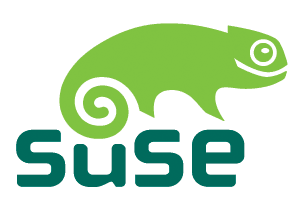

La definicion del software estipula los criterios que se tienen que cumplir para que un programa sea considerado libre
De vez en cuando modificamos esta definicion para clarificar o para resolver problemas sobre cuestiones delicadas
Mas abajo en esta pagina en la seccion Historial, se puede consultar la lista de modificaciones que afectan la definicion del software libre
"Software libre" es el sofware que respeta la libertad de los usuarios y la comunidad. En grandes lineas, significa que los usuarios tienen la libertad de ejecutar, copiar, distribuir, estuduar,
modificar y mejorar el software. Es decir, el "Software libre"es una cuestion de libertad no de precio. Para entender el concepto, piense en "libre"como en "libre
expresion", no como en barra libre.
La libertad de ejecutarel programa como se desea, con cualquier proposito (Libertad 0)
La libertad de estudiarcomo funciona el programa, y cambiarlo para que haga lo que usted quiera (libertad 1). el acceso al codigo fuentees una condicion necesaria para ello.
la libertad de redistribuircopias para ayudar a su projimo (libertad 2)
La libertad de distribuircopias de sus versiones modificadas a terceros (libertad 3). Esto le permite ofrecer a toda la comunidad la oportunidad de beneficiarse de las modificaciones. El acceso al codigo fuente es una condicion necesaria para ello.
La libertad para distribuir (libertades 2 y 3)significa que usted tiene la libertad para redestribuir copias con o sin modificaciones, ya sea gratuitamente o cobrando una tarifa por la distribucion, a cualquiera en cualquier parte. Ser libre de hacer esto significa, e ntre otras cosas, que no tienedebe que pedir ni pagar ningun permiso para hacerlo.
| Ñu |
un Ñu es el animal representativo del proyecto GNU ya que GNU significa "Ñu" en ingles. El nombre GNU no se adopto porque a la persona que comenzo el proyecto Richard Stallmanle gustase particularmente este animal sino porque GNU es un acronimo recursivo que quiere decir "GNU"s Not Unix." |
| Gimp |
Wilber es la mascota de GIMP(GNU image Manipulation Program)fue creada en 1997 por Thomas Kuosmanen y Wilber es un...gimp. A menudo se confunde con un zorro o un raton pero su creador, Wilber es simplemente un gimp. |
| Tux |
La idea de Tux surgio del propio Linus Tarvalads; segun cuenta, de pequeño le mordio un pingüino en Australia y desde entonces le parecio un animal simpatico. no hay un origen claro del nombre "Tux"; algunos dicen que proviene del ingles Tuxedo que significa esmoquin (siempre se ha dicho que los pingüinos van de esmoquin) y otros dicen que el nombre es una mezcla de Torvald con Unix. |
| Mono | Mono es tanto el nombre como el animal representativo´como de un proyecto que pretende ser una implementacion libre de la plataforma.Net. |
| Perl |
El camello es la imagen del lenguaje Perl desde que apareciese por primera vez en el libro "Programming Perl" , curiosamente, el camello de Perl tiene derechos de autor (la editorial O Reilly). |
| Mysql |
El delfin que es parte del logo de Mysql se llama Sakila. Segun los creadores de Mysql, este delfin representa los valores de la compañia y de la base de datos: rapidez, precision, potencia y naturalidad. |
| Suse | Geeko; asi se llama el simpatico camaleon que es la mascota de la compañia alemana Suse. El nombre fue elegido tras un concurso en el que participaron miles de personas y proviene del termino Geek (http://es.wikipedia. org/wiki/Geek) que se podria traducir al castellano como friki. | software libre la comunidad hacia el conocimiento sublime text linux